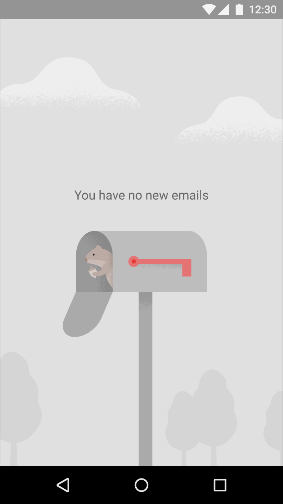
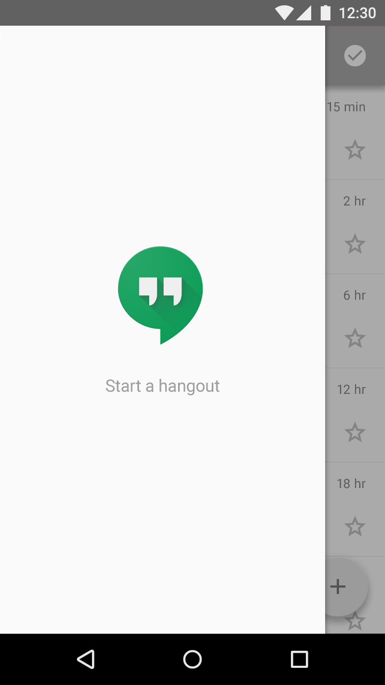

가장 기초적인 비어 있는 상태는 상호작용이 없는 이미지와 텍스트 슬로건(Tagline)을 표시합니다.
다음과 같은 이미지를 사용하십시오:
- 배경에 대한 절묘하고 중립적인 이미지
- 당신의 앱 아이콘과 같이 목적과 앱의 가능성을 적극적으로 전달하는 이미지
다음과 같은 슬로건을 포함하십시오:
- 긍정적인 어조
- 당신의 브랜드와 일치하는 슬로건
- 액션이 가능하게 보여지는 것 없이 그 앱의 의도를 전달하는 슬로건

Do.
이미지는 배경의 중립적이고 분명한 부분입니다. 슬로건은 행동의 호출을 제공하는 것 없이 앱의 의도를 전달합니다.

Don't.
이미지는 밝으며 슬로건은 액션의 호출 같이 쓰여져 있어서, 이것은 사용자에게 행아웃이 시작할 것이라고 생각하여 터치하는 것을 부추길 것입니다.